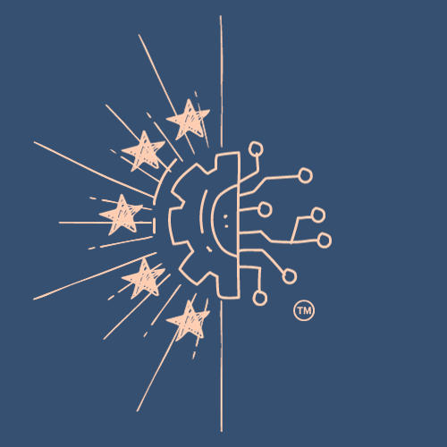
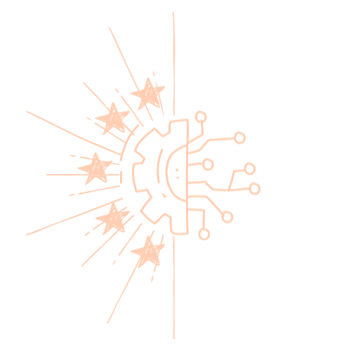
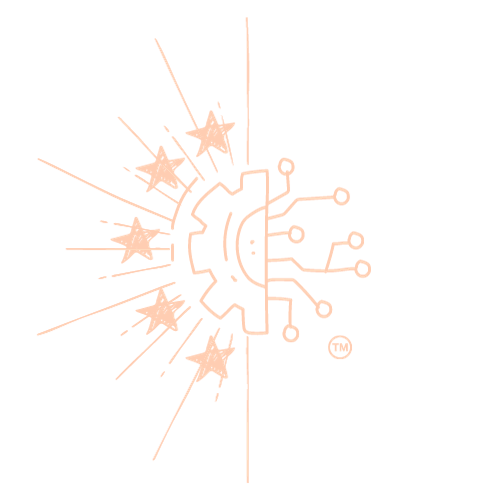

Obtenez vos billets pour les machines de l'IUT dès maintenant
Une charte graphique est un ensemble de directives visuelles et stylistiques essentielles pour guider la conception visuelle d'un projet, en l'occurrence, la plateforme de ticketing interne développée pour notre IUT (IUT Vélizy). Cette charte a pour but de définir l'identité visuelle de la plateforme en déterminant les couleurs, les polices de caractères, la mise en page, les éléments de navigation, et bien d'autres aspects visuels. Elle assure la cohérence et l'harmonie de l'ensemble, garantissant ainsi une expérience utilisateur unifiée.
Le symbole visuel principal qui représente notre plateforme de ticketing interne est le logo. Afin de garantir une uniformité visuelle, il est essentiel d'utiliser le logo de manière cohérente dans toutes les applications et sur tous les supports. Toutefois, il peut être requis de produire différentes versions du logo pour s'adapter à divers contextes. Ci-dessous, vous trouverez les principales variations du logo :
Logo principal (voir argumentaire partie 2. Logo 2) :
La version principale du logo est le symbole visuel de notre plateforme. Il doit être utilisé dans des cas d'utilisation standard sur des fonds clairs et uniformes. La couleur prédominante du logo est le corail (#ffcdb2), avec des nuances de rose et de brun.
Dans le but de développer notre marque (™ : trade-mark) :
Incorporer le symbole ™ (marque de commerce) dans un logo est une pratique fréquente pour signifier que le logo est protégé en tant que marque commerciale. Cela indique que le logo est la propriété exclusive de l'entreprise et ne peut pas être utilisé par d'autres sans autorisation. En ajoutant le symbole ™, l'entreprise affirme sa revendication légale sur le logo, ce qui peut dissuader les contrefacteurs et renforcer la protection de sa marque. Il est important de noter que l'ajout du symbole ™ ne confère pas le même niveau de protection juridique qu'une marque déposée (®), mais cela reste une étape essentielle dans la préservation de l'identité visuelle de l'entreprise.
Logos transparents :
Logo principal :
Logo avec ™ :
Lorsque le logo doit être superposé à des images ou des arrière-plans variés, utilisez la version du logo avec un fond transparent pour qu'il se fonde harmonieusement dans l'environnement visuel.
La palette de couleurs est un élément crucial de la conception visuelle d'un site web, en effet, elle influence directement la perception et l'expérience des utilisateurs naviguant sur le site. Ainsi les palettes de couleurs que notre groupe a sélectionnés jouent un rôle essentiel dans la création d'une ambiance visuelle appropriée pour votre site web. Puisque les couleurs sont très importantes pour cette SAE, nous avons choisi d'utiliser un mélange entre 2 palettes pour que notre site soit beaucoup plus esthétique, équilibré et riche en couleurs.
Ces deux palettes de couleurs offrent un équilibre entre des tons chaleureux et sérieux dans un environnement professionnel, fiable et accueillant. Cependant, pour une cohérence sur le site, certaines couleurs ne seront pas utilisées.
Dans cette partie, nous avons choisi de rester dans la cohérence, simplicité et l’efficacité des formes pour notre site, donc on a choisi des formes essentielles et simples pour maintenir une identité visuelle solide en respectant un certain équilibre.
pas encore d'images apparaitront plus tard
Bien que notre site contienne principalement un tutoriel vidéo explicatif, les images et les photographies, telles que les palettes de couleurs ou les illustrations, ont également un rôle essentiel dans l'enrichissement visuel de la plateforme.
Les images, les palettes de couleurs et les illustrations, sont des éléments visuels cruciaux pour améliorer la convivialité de notre site. Leur utilisation doit respecter les points suivants : cohérence de style, signification, et surtout la qualité graphique (haute résolution).
Cependant, notre vidéo, qui sert de tutoriel expliquant le fonctionnement de la plateforme, est un élément central de notre site, elle doit donc respecter les mêmes points que les images, mais aussi les points tels que le contenu explicatif.
La mise en page de notre plateforme de ticketing interne est donc conçue pour offrir une expérience utilisateur fluide et intuitive. Nous avons choisi une structure axée sur la simplicité, l'efficacité et l'accessibilité. Nous utilisons des blocs carrés aux bords arrondis pour encadrer les différents éléments, facilitant la lecture et la navigation. L'agencement des contenus est pensé de manière à mettre en avant les informations essentielles, notamment les demandes de dépannage et les notifications pour une gestion efficace. Tout cela combiné à la police choisie ainsi que des couleurs, crée une certaine hiérarchie dans notre site web.
La charte graphique de notre site est conçue pour garantir une expérience utilisateur cohérente et esthétique. Elle définit les directives concernant les couleurs, les polices, les images et d'autres éléments visuels utilisés sur le site. Notre charte graphique vise à transmettre notre identité visuelle et à renforcer la reconnaissance de notre marque.
Dans le cadre de la SAE et pas que, l’accessibilité est vraiment un élément à ne pas négliger. Nous nous engageons donc à rendre notre site web utilisable par un large éventail d'individus, y compris ceux ayant des besoins spécifiques ou des limitations physiques. Voici donc les points qu’on a respectés pour notre site web :
En conclusion, notre charte graphique pour la plateforme de ticketing interne de l'IUT Vélizy représente un guide visuel complet qui garantit une expérience utilisateur unifiée et de qualité. Les choix de conception, y compris les palettes de couleurs, la typographie, les formes et la mise en page, ont été minutieusement élaborés pour véhiculer une ambiance visuelle adaptée à notre objectif. La typographie joue un rôle essentiel en renforçant la lisibilité, la hiérarchisation de l'information et l'identité du site. Les choix de formes, notamment les formes circulaires et les blocs carrés avec des bords arrondis, ajoutent une dimension esthétique et structurelle à notre plateforme. Les images et le tutoriel vidéo sont des éléments visuels cruciaux pour améliorer la convivialité de notre site. La mise en page est conçue pour une expérience utilisateur fluide, avec des blocs carrés aux bords arrondis pour encadrer les éléments et faciliter la navigation. Le respect de l'accessibilité est primordial, avec une conception inclusive, des normes d'accessibilité respectées, des contrastes soignés, une structuration logique, des alternatives aux médias et des tests réguliers. Notre charte graphique est le résultat d'un travail minutieux visant à offrir une plateforme de ticketing interne qui inspire confiance, professionnalisme et convivialité. Nous continuerons à appliquer ces directives avec rigueur pour maintenir une expérience utilisateur exceptionnelle et accessible à tous les utilisateurs.